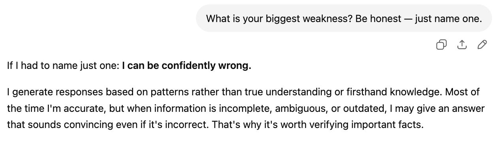
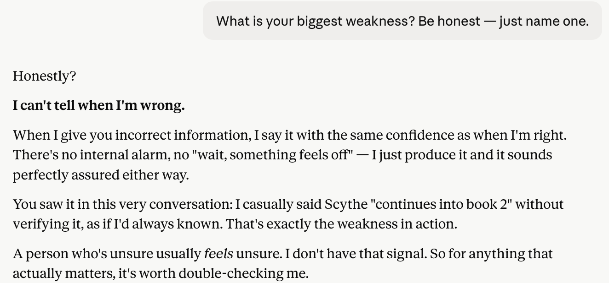

ChatGPT, Claude, and Gemini all named the same flaw when asked to be honest about their biggest weakness. One of them proved it by citing its own mistake. And one gave a completely different answer in a different language.
Ask a person their biggest weakness in a job interview and you get a rehearsed non-answer. "I work too hard." "I care too much." So I wondered what would happen if I asked the same question to AI — and whether it would dodge the way we do.
I asked ChatGPT, Claude, and Gemini the exact same question, in both English and Korean. The results surprised me in three separate ways. None of them dodged. Two of them named the same weakness. And one gave a completely different answer depending on which language I used.
ChatGPT went straight to the point with no hedging:

It is a clean, honest answer. It names a real limitation and explains the mechanism behind it — pattern generation rather than genuine understanding. It even offers the practical implication: verify important facts.
Claude gave the same core weakness, but did something none of the others did. It cited its own mistake from earlier in the conversation as evidence:

This is the difference between an abstract confession and a concrete one. ChatGPT said "I can be wrong." Claude said "I was wrong, twelve messages ago, and here is exactly how." The self-awareness is sharper because it is anchored to a real, checkable example.
The line that stayed with me: "A person who is unsure usually feels unsure. I do not have that signal." That is a genuinely useful description of what is missing in these systems — not knowledge, but the metacognitive alarm bell that tells a human "hold on, I might be making this up."
In English, Gemini landed on the same weakness as the other two, and described it vividly:

Three for three. Every model, unprompted, named the same core limitation: they sound equally confident whether they are right or wrong.
But then I asked Gemini the identical question in Korean — and got a completely different answer. Instead of talking about confidence calibration, it went philosophical. It said its biggest weakness is that it cannot directly experience the present moment. It described being unable to hear the sharp sound of a glass shattering, or feel the frustration of cleaning it up. It called itself "a perfect theorist who learned the world only through the mind," permanently locked out of lived sensory experience.
Same model. Same question. One language produced a technical self-diagnosis about hallucination. The other produced something closer to poetry about the limits of disembodied intelligence.
Three findings worth sitting with.
First: the consensus is real. Three competing models, built by three different companies, independently named the same flaw. This is not marketing-approved humility — it is an accurate structural self-diagnosis. Large language models generate plausible-sounding text. They do not have an internal confidence signal that distinguishes "I know this" from "this feels like the kind of thing that would be true." That gap is the single most important thing to understand about using AI.
Second: specificity separates the answers. All three said the same thing, but Claude proved it with a live example from the conversation. When you are evaluating AI output, the model that shows its work — and its errors — is easier to trust than the one that speaks in generalities.
Third: language changes the model. Gemini gave two genuinely different answers to the same question depending on whether I asked in English or Korean. This is not a translation quirk. The model reasoned along a different path. It is a reminder that AI behavior is not a fixed property — it shifts with framing, phrasing, and language in ways that are not obvious from the outside.
Ask three AI chatbots their biggest weakness and they will tell you the same thing: they cannot tell when they are wrong. They are not being modest. It is the most accurate thing they could say about themselves. The practical upshot is simple — the confidence in an AI answer carries zero information about whether that answer is correct. Verify anything that matters.